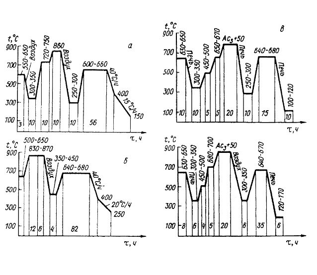
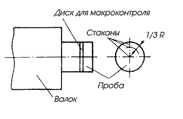

Общие требованиями к сталям для валков горячей прокатки основываются на разогреве поверхностного слоя валка деформируемым металлом, при этом поверхностный слой расширяется сильнее, чем внутренний, более холодный. Это приводит к появлению больших напряжений – сжимающих на поверхности и растягивающих в глубинных слоях. В момент завершения контакта поверхности валка с деформируемым металлом происходит быстрое охлаждение поверхностного объема и образуются напряжения сжатия. В результате чего возникают напряжения противоположного знака. Многократный, циклический быстрый нагрев поверхностного слоя с последующим быстрым охлаждением приводит к образованию сетки трещин (разгар).
Исследования показали, что в установившемся режиме прокатки поверхность нагревается до 750–800 °С, в то время как на глубине 3–4 мм она не превышает 100 °С. Термические и структурные напряжения, возникающие на поверхности валка, суммируются с напряжениями от действующих нагрузок и могут превысить предел прочности отдельных микрообъемов, что и приводит к образованию трещин. Длительный нагрев до высоких температур может привести к структурным изменениям. В сталях перлитного класса происходит сфероидизация карбидов. Основным критерием работоспособности валков является термостойкость, износостойкость и усталостная прочность. Химический состав сталей не может однозначно определить качество валков горячей прокатки, поскольку сопротивление износу и зарождению трещин зависит от множества других факторов, определяемых и термической обработкой.
Химический состав (%) сталей для валков горячей прокатки (ГОСТ 9487–70 и 10207–70)
| Марка стали | C | Mn | Cr | Ni |
|---|---|---|---|---|
| 55X | 0,5-0,6 | 0,5-0,8 | 1-1,3 | 0,5 |
| 60XГ | 0,55-0,66 | 0,8-1 | 1-1,3 | 0,4 |
| 60XН | 0,55-0,65 | 0,5-0,8 | 0,5-0,6 | 1-1,5 |
Содержание кремния 0,17–0,37%, серы и фосфора < 0,040%.
Термическая обработка валков, как правило, является окончательной термообработкой после ковки и состоит из нормализации и длительной выдержки при температуре высокого отпуска. Необходимость нормализации вызвана тем, что в процессе ковки температура различных частей поковки может изменяться в широких пределах. Степень деформации также широко изменяется по сечению заготовки. Цель нормализации заключается в снижении внутренних напряжений и измельчении зерна, что приводит к повышению механических свойств.
На рис. 3а представлена термообработка поковок из стали 60ХН. Причем изотермическая выдержка в субкритическом интервале температур определялась из расчета около 4 ч на 100 мм сечения. Второй режим (3б) соответствует изотермической выдержке до 7 ч на 100 мм. В третьем случае проводится двойная термообработка – предварительная и окончательная, общая продолжительность которой доходит до 20 суток. Поковки подвергают термической обработке в печах с выкатным подом, садка которых достигает 200–250 т. Поковки располагают в несколько ярусов, причем для прогрева изделий больших сечений необходима выдержка 2,5–3 ч на 100 мм. Только в этом случае будут выполнены необходимые условия для перекристаллизации, что обеспечит измельчение зерна, устранение внутренних напряжений и выравнивание механических свойств по всему сечению.
Заводы заинтересованы в сокращении продолжительности термообработки, но это может быть реализовано только в том случае, когда известны реальные скорости нагрева и охлаждения по всему сечению заготовок, а также, если известна кинетика распада переохлажденного аустенита, как в изотермических условиях, так и при непрерывном охлаждении. Нагрев под нормализацию должен обеспечить температуру выше критических точек во всем сечении заготовки, исходя из чего выбирают режим нагрева, т.е. скорость нагрева, температуру и длительность выдержки.
Для таких садок скорость нагрева составляет от 20–60 град/ч. Скорость охлаждения также находится в этих пределах. Поэтому из анализа термокинетической диаграммы распада переохлажденного аустенита следует, что при охлаждении поковок до температур 650–600 °С в них полностью завершается перлитное превращение. Охлаждение необходимо проводить до тех пор, пока в центре поковки температура не достигнет 600 °С. Но диаметр бочки валка приблизительно в 2–2,5 раза больше диаметра шейки, из-за чего скорость охлаждения шейки значительно выше, чем скорость охлаждения бочки. Поэтому в этих местах могут возникать флокены. Таким образом, при термообработке крупногабаритных поковок необходимо учитывать обеспечение замедленного охлаждения шеек.
Четвертый режим обеспечивает сокращение длительности термообработки на 20–30 часов при обеспечении необходимого качества.
Качество поковок определяют по механическим свойствам на глубине, составляющей 1/3 радиуса от поверхности шейки на продольных образцах. Кроме того, проводится контроль по макроструктуре на флокены и ликвационную неоднородность.
В состоянии поставки валки горячей прокатки должны иметь следующие свойства: σв>800 МПа, σ0,2>500 МПа, δ>8%, ψ>33%, KCV≥0,3 МДж/м2. Если в пробе выявляются флокены, то валки бракуются и подвергаются перековке. Обычно флокены наблюдаются на глубине от 1/3 до 2/3 R и не наблюдаются в поверхностной и центральной зонах, поскольку из поверхностной зоны водород успевает выделиться, а в центральной зоне имеются микронесплошности, в которые выделяется водород и не создает критического давления.